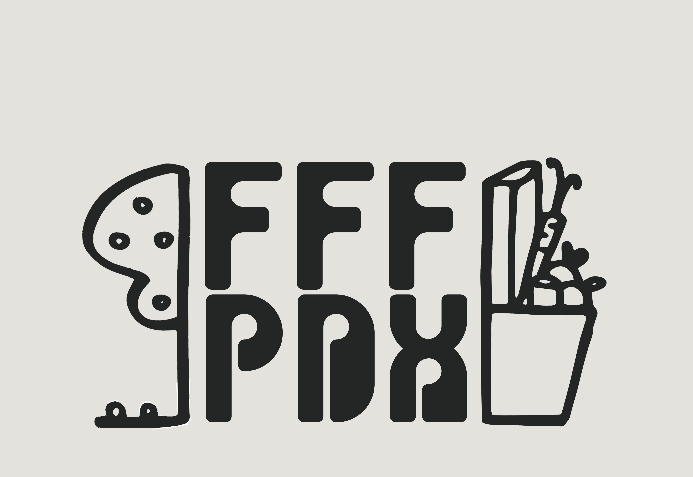
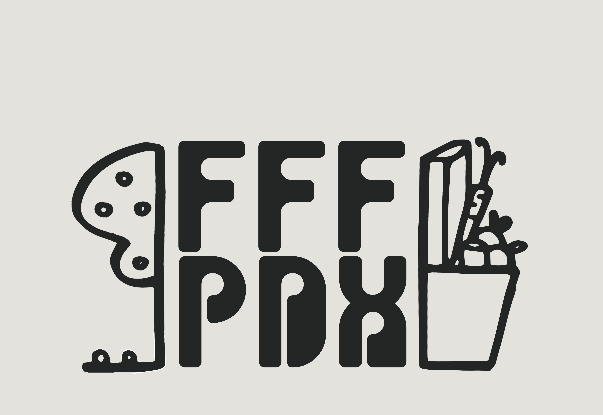

EVENTS HAPPENING TODAY
Neighborhood House Community Services
SW Portland | Hours: 3 PM - 8 PM
Genesis Community Fellowship Food Pantry
NE Portland | Hours: 4 PM - 6 PM
Preston’s Pantry
NW Portland | Hours: 5:30 PM - 7:30 PM
See our calendar for more upcomming events!
WELCOME!
We are here to help connect the greater Portland community to food pantries, free meals and urban foraging opportunities.
You can use our navigation tabs to search for food by location or date/time as well as read more about us, FAQs, and check out our resources page for helpful links to transportation and more!
LOCAL FRESH PRODUCTS IN SEASON
Fruits: Apples, hazelnuts, pears, rhubarb
Vegetables: Asparagus, garlic, lettuce, mushrooms, onion, potatoes